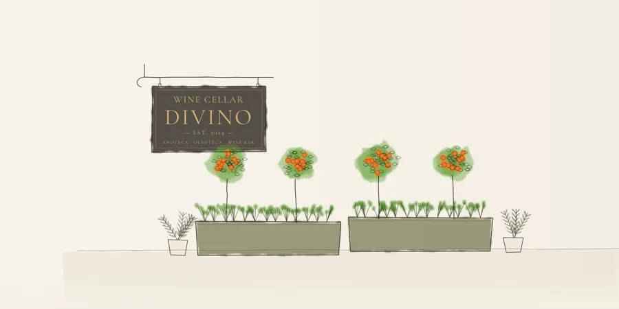

Consegna in giornata
Dalla nostra cantina a casa tua, oggi stesso.
Ordina i tuoi vini siciliani e le bollicine, e te li portiamo in villa, in appartamento o in hotel in giornata.
Ordina entro le 12:00 per la consegna in giornata.Consegna gratuita in giornata · Ordine minimo 50 €
Ogni ordine da 50 € in su viene consegnato gratis a domicilio, in giornata.
Tre passi fino a casa tua
Invia l’ordine
Scrivici su WhatsApp o chiamaci con ciò che desideri e il tuo indirizzo.
Confermiamo
Ti rispondiamo con il totale e l’orario di consegna.
Consegniamo
Il tuo ordine arriva in giornata, pronto da aprire o da mettere in fresco.
La cantina, portata a te
Bollicine
Carricante Brut Metodo Classico
€28Metodo Classico di Carricante dal versante nord dell’Etna, a 850 metri. Agrumi, crosta di pane, fresco e minerale. 24 mesi sui lieviti.
Leggi di più
Prodotto da una delle più importanti realtà vitivinicole siciliane, che si distingue per la scelta di aver valorizzato diversi terroir dell’isola, con la fondazione di cinque diverse cantine. Questo Carricante proviene da contrada Sciaranuova, sul versante Nord dell’Etna, dove i suoli costituiti da sabbia vulcanica e l’altitudine di 850 metri regalano un metodo classico fresco e minerale, con note di agrumi, crosta di pane e una spiccata sapidità. Affinato 24 mesi sui propri lieviti in bottiglia.
Vini siciliani
Bianchi e Rosato
Catarratto “Miano”
€16Bianco di montagna da vecchie vigne delle Madonie, a quasi mille metri. Fiori bianchi, mela verde, minerale e vibrante.
Leggi di più
Prodotto da una piccola cooperativa di Valledolmo, costituita da diverse famiglie la cui missione è sostenere la viticoltura di montagna e recuperare i vecchi vitigni delle Madonie. Questo Catarratto proviene da vigne vecchie ad alberello e giovani a spalliera poste ad una altitudine che sfiora i mille metri, poggiando su suolo calcareo. Le grandi escursioni termiche e la presenza di calcare attivo restituiscono un Catarratto di grande tensione, con profumi di fiori bianchi e mela verde, minerale e con una spiccata acidità.
Grillo “della Timpa”
€18Grillo artigianale dalle alte colline di Cammarata. Zagara, agrumi ed erbe aromatiche, con una vena minerale.
Leggi di più
Prodotto da una realtà artigianale che affonda le radici nel 1469, condotta oggi dal viticoltore Fabio Sireci, custode di vecchissimi cloni di vitigni autoctoni siciliani. Questo Grillo nasce sulle alte colline di Cammarata, tra le Madonie e l’agrigentino, un territorio con suoli argillo-sabbiosi, fresco e ventilato, che dona un bianco intenso e persistente, con aromi di zagara, agrumi, erbe aromatiche e una bella vena minerale. Affinato in vasche di cemento, con pochi giorni di macerazione sulle bucce.
Zibibbo Secco “Gagliardetta”
€20Zibibbo secco da una singola vigna sul golfo di Castellammare. Agrumi e fiori bianchi, note di salvia e menta.
Leggi di più
Prodotto da una storica azienda di Marsala, fondata nel 1875, che può vantare etichette disegnate dall’architetto Ernesto Basile. Questo Gagliardetta è uno Zibibbo in purezza prodotto da una singola vigna, che guarda al golfo di Castellammare da una collina a 350 metri esposta ad Est. Suolo sabbioso e argilloso per questo Zibibbo vinificato secco, dalla grande freschezza e dal bouquet ricco e complesso, fatto di agrumi e fiori bianchi, con un sottofondo di salvia e menta.
Etna Bianco
€26Bianco vulcanico dalle pendici dell’Etna. Minerale, fresco ed elegante.
Leggi di più
Prodotto da una delle più antiche aziende dell’Etna, attiva sul vulcano dal 1727, custode di vecchie vigne sul versante orientale della montagna. Questo Etna Bianco nasce a Milo, unico comune per il quale è prevista la menzione “Superiore” per i vini prodotti a base di Carricante. Un vino che nasce da sabbia e cenere vulcanica sul versante che guarda al mare, affinato almeno dieci mesi in acciaio, si distingue per sentori floreali e di frutta bianca, armonico grazie alla freschezza e alla spiccata mineralità.
Etna Bianco “Valcerasa”
€34Piccola azienda di famiglia sull’Etna. Un bianco vulcanico più profondo e raffinato.
Leggi di più
Prodotto da una delle più autentiche e interessanti realtà artigianali dell’Etna, azienda familiare guidata da Alice Bonaccorsi, focalizzata su pratiche naturali e rispetto della vite. Questo Carricante nasce in contrada Croce Monaci, sul versante settentrionale dell’Etna a circa 750 metri di altitudine. Il suolo vulcanico, su cui crescono le viti ad alberello, particolarmente ricco di pietre, dona un bianco piacevolmente minerale che nel tempo sviluppa preziose note di idrocarburi. Una piccola percentuale di vino svolge la macerazione con le bucce prima di affinare per due anni in acciaio.
Etna Rosato “Alnus”
€24Rosato tenue e delicato dell’Etna. Frutti rossi, freschezza e un finale sapido.
Leggi di più
Prodotto da una azienda nata con la missione di salvaguardare i vecchi vigneti etnei ad alberello e il paesaggio terrazzato, con l’aiuto di maestranze locali: i Vigneri. Questo rosato nasce sul versante settentrionale del vulcano, da vigneti di alta quota coltivati ad alberello, su terrazzamenti in pietra lavica. Blend di Nerello Mascalese e Cappuccio, sfoggia un colore rosa tenue, con profumi di melograno e fragolina di bosco, su un sottofondo minerale e affumicato.
Rossi
Perricone
€20Raro vitigno autoctono delle Madonie. Frutto scuro, note speziate, morbido.
Leggi di più
Prodotto da una piccola cooperativa di Valledolmo, costituita da diverse famiglie la cui missione è sostenere la viticoltura di montagna e recuperare i vecchi vitigni delle Madonie. Questo rosso nasce da uve Perricone in purezza, coltivate fino a mille metri di altitudine sulle Madonie, su un suolo calcareo e argilloso, che restituisce nel calice un rosso intenso, con note di prugna, frutti di bosco, spezie scure e un tannino deciso ma ben integrato.
Perricone
€20Lo stesso raro vitigno da una cantina di famiglia della Sicilia occidentale. Ricco e genuino.
Leggi di più
Prodotto da una piccolissima azienda di Santa Ninfa, nata nel 2003 in provincia di Trapani, per valorizzare la storia, la cultura e i prodotti della terra. Questo Perricone in purezza nasce in contrada Calviano, in media collina su un suolo localmente chiamato Baiata, totalmente bianco e fortemente calcareo. Ne deriva un vino dalla grande complessità, con sentori di grafite, humus, e goudron che al sorso mostra tannini equilibrati e grande freschezza.
Frappato “Nerocapitano”
€22Rosso leggero e succoso, profuma di ciliegia. Ottimo leggermente fresco.
Leggi di più
Prodotto da una realtà artigianale guidata da Filippo Rizzo, condotta secondo principi naturali, applicando tecniche di coltivazione biodinamica, senza interventi invasivi in cantina. Questo Frappato nasce a San Michele di Ganzeria, entroterra collinare con suoli calcarei e sabbiosi, che regalano un rosso leggero, dinamico e succoso, con note di ciliegia fresca, melograno e spezie dolci. Al sorso mostra grande bevibilità e freschezza.
Etna Rosso “Valcerasa”
€30Rosso vulcanico ed elegante dell’Etna. Frutti rossi, tannini fini, finale minerale.
Leggi di più
Prodotto da una delle più autentiche e interessanti realtà artigianali dell’Etna, azienda familiare guidata da Alice Bonaccorsi, focalizzata su pratiche naturali e rispetto della vite. Questo Etna Rosso è ottenuto da uve di Nerello Mascalese, con un 20% di Nerello Cappuccio, coltivate ad alberello nel comune di Randazzo, versante Nord del vulcano, a 750 metri di altitudine. Dopo un lungo affinamento in acciaio e in bottiglia si ottiene un rosso dal profilo ampio e complesso, con pot-pourri floreale, discreta mineralità e sottofondo speziato.
Nero d’Avola “Vrucara”
€48La nostra bottiglia speciale. Da vigne antichissime, profondo e complesso, per le grandi occasioni.
Leggi di più
Prodotto da una realtà artigianale che affonda le radici nel 1469, condotta oggi dal viticoltore Fabio Sireci, custode di vecchissimi cloni di vitigni autoctoni siciliani. Questo Nero d’Avola è una selezione dalle vigne più vecchie della tenuta, con ceppi di anche 150 anni e franchi di piede, coltivati ad alberello ad alta quota, su suolo sabbioso e argilloso. Dopo cinque anni di affinamento in cantina nasce un vino profondo e complesso, dove note fruttate e balsamiche si alternano a sentori di incenso e cacao.
Vino sfuso delle nostre botti
Bottiglia 75 cl · IVA inclusa
La nostra selezione per la consegna può variare periodicamente, in base alla stagione e alla disponibilità dei produttori. Se un vino non è disponibile, ti proporremo una bottiglia simile alla conferma dell’ordine.
Una degustazione nella tua villa?
I nostri sommelier possono venire da te, con i vini.
- Età
- Consegniamo alcolici solo a maggiorenni e potremmo chiedere un documento.
- Ordina con
- WhatsApp o telefono: +39 331 253 0729